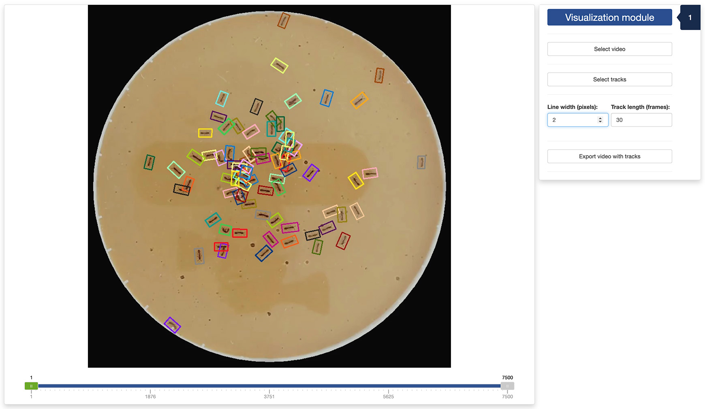

In this tutorial, we will discuss how to use the fourth app provided
with trackRai to visualize the output of the tracking app,
as explained in the previous
tutorial.
5.1 - Launch the visualization app
To launch the visualization app, run the following in the R console:
This will open the app either in the viewer panel of RStudio and
Positron, or in your default internet browser. You can control where the
app is opened using the launch.browser parameter (see the
documentation of shiny::runApp() for more information).
5.2 - Tab 1: visualization module
Once the app opens, you will be presented with the “Visualization”
tab. First, you need to select a video by clicking the
Select video button. You will also select a CSV file
containing the tracks obtained using the tracking app by clicking the
Select tracks button. These steps will load the video and
tracks in the app. You can navigate through the video using the slider
under the display panel. The slider has three handles:
- the green handle allows you to navigate through the video to display a frame of your choice;
- the two grey handles allow you to restrict the processing of the video to a range of frames in the video. This can be convenient when only a portion of the video is usable, for instance.

You can adjust the width of the border of the rectangle enclosing each track object. You also adjust the length (in frames) of the track left behind each moving object.
Finally, you can export a video showing the rectangles and tracks by
clicking the Export video with tracks button. This will
bring up a file browser where you can select where to save the
video.